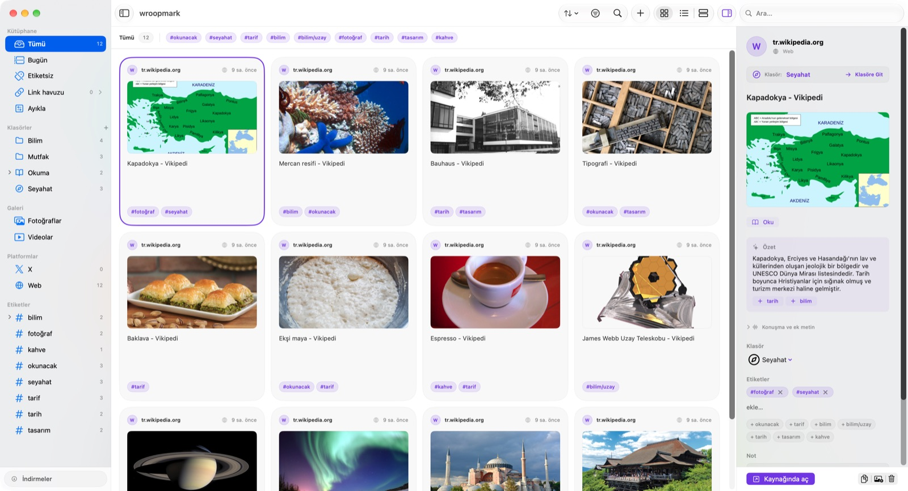
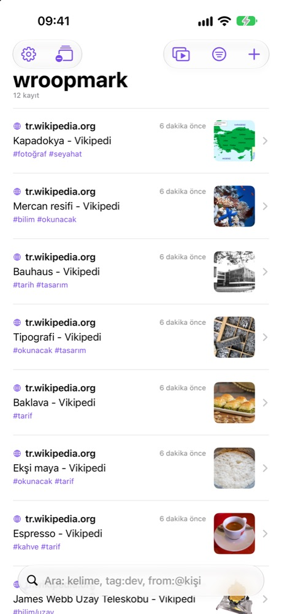
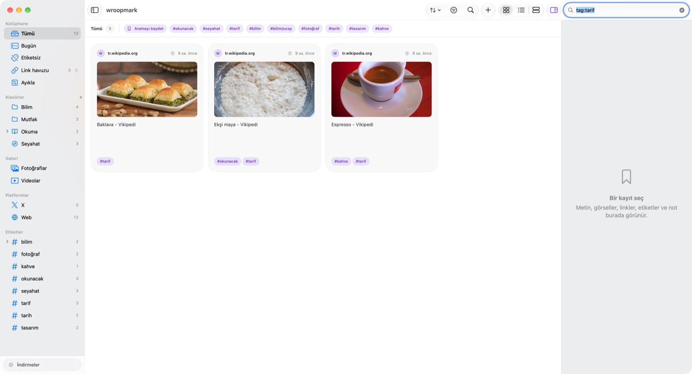
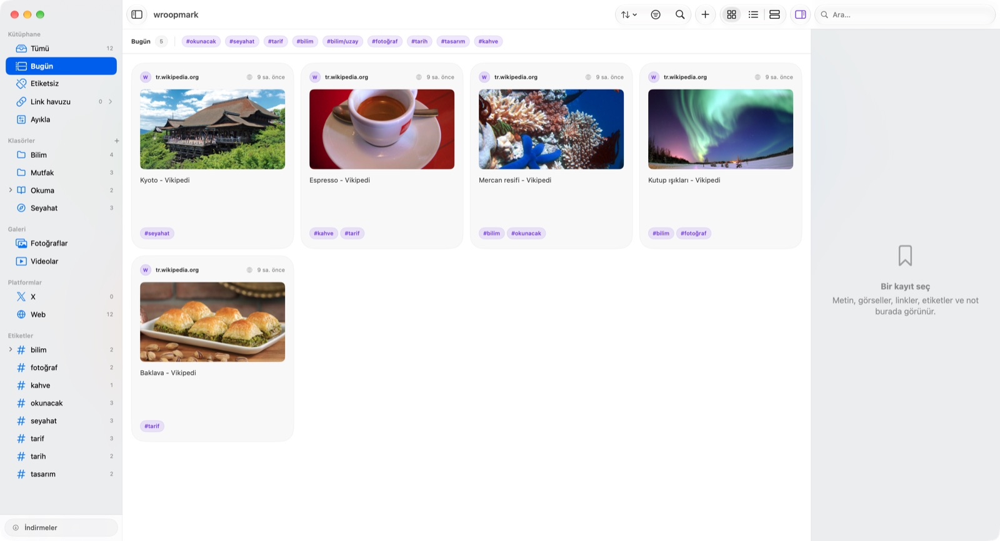
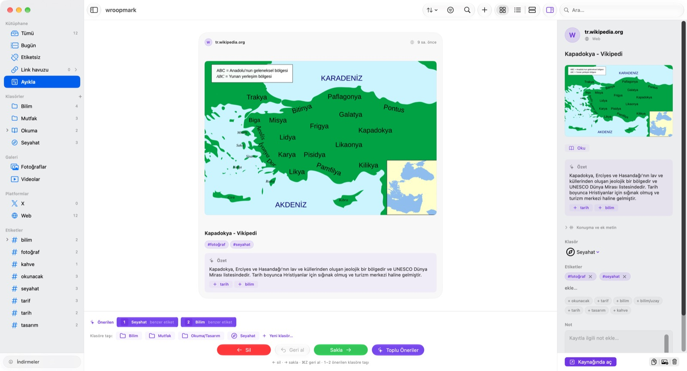
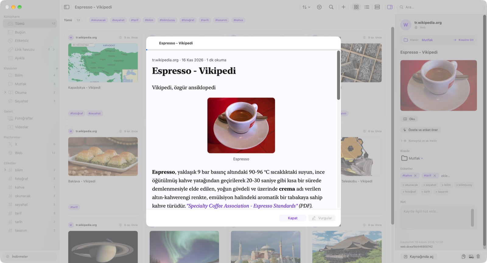
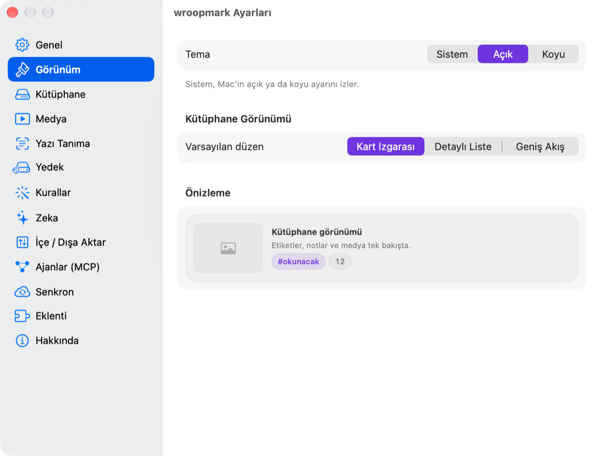
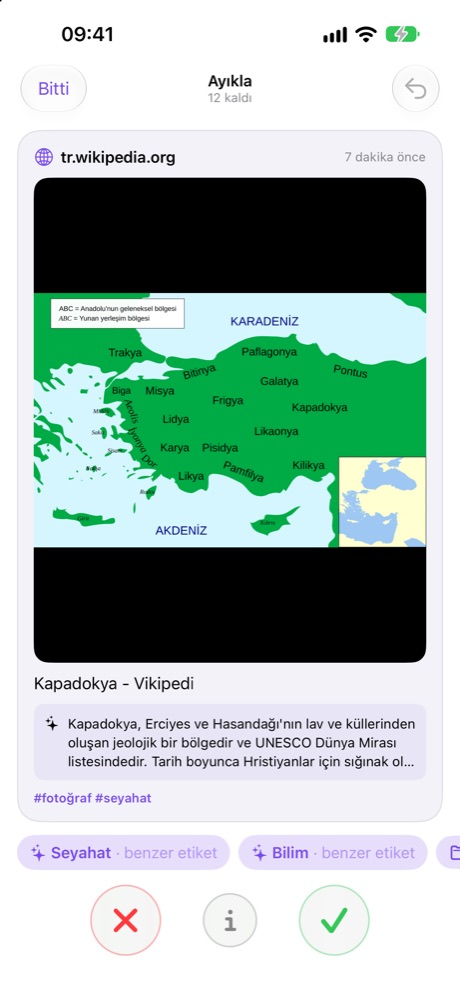
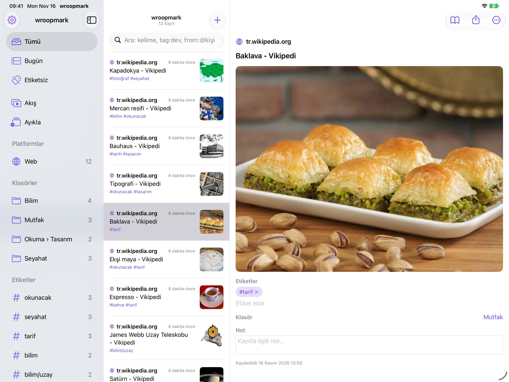

Her şey tek ızgarada
Her uygulamadan gönderiler, sayfalar ve görseller; önce görsel, en yeni en üstte. Kenar çubuğunda klasörler, iç içe etiketler ve platformlar.
X, TikTok, Instagram, Reddit, YouTube ve web'den gönderiler, videolar, makaleler ve görseller Mac'inde, iPhone'unda ve iPad'inde durur. İnternetsiz, aranabilir ve kimsenin sunucusunda değil, çünkü sunucu yok.
Ücretsiz ve açık kaynak · macOS 26 ve sonrası · 15 MB, Apple tarafından imzalı ve onaylı · v1.7.1


Şuralardan kaydeder
Her yerde bir şeyler kaydediyorsun ve hepsi dağılıyor: beş ayrı uygulama, yarısında arama yok ve aradığın gönderi sahibi sildiği gün kayboluyor. wroopmark metni, görselleri ve videoları kendi cihazlarında saklar; internetsiz okunur, asıl gönderi silinse de kalır.
Tur · Mac
Kaydır; aşağıdaki pencere uygulamanın yaptığını yapsın.






Her uygulamadan gönderiler, sayfalar ve görseller; önce görsel, en yeni en üstte. Kenar çubuğunda klasörler, iç içe etiketler ve platformlar.
Bir kaydı seç: cihazda yazılmış özeti, önerilen etiketleri ve klasörü yanında belirir. Apple'ın modelleri, senin Mac'inde; hiçbir şey dışarı gitmez.
tag:tarif, from:@biri, has:video ya da düz kelimeler yaz. Görsellerdeki yazı ve videolardaki konuşma da aranır.
Geçmiş yıllarda bugün kaydettiklerin ve arşivden beş seçki; eski kayıtlar sana geri döner.
Kayıtlar tek tek gelir: sil, sakla ya da önerilen klasöre at. ← → 1–2 tuşları ve geri al.
Kaydettiğin her görsel tek galeride. Benzer görsel araması bir serinin gerisini bulur.
Sayfanın kendi kopyasından sade okuyucu: tema, yazı boyutu, sesli okuma, vurgu ve not. Site kapansa da çalışır.
Mac'ini izlesin ya da birini seç. ⌘N ekle, Boşluk önizle, ⌃⌥⌘S her uygulamadan kaydet.
Tur · iPhone
Tek başına çalışır; Mac yalnızca hızlandırır.



X'te, Safari'de, Instagram'da ya da herhangi bir uygulamada: Paylaş → wroopmark. Bir kez sık kullanılanlara ekle, hep tek dokunuş.
Bağlantı hemen kaydedilir. Başlık, metin ve görseller kendiliğinden gelir; internet yokken bile.
Her kayıt görselleriyle kalır. Etiketle, klasöre koy, not yaz ya da Fotoğraflar'dan kendi videonu gönderiye ekle.
İnternetsiz okuyucu; eşitlenen vurgular ve Kilit Ekranı'nda sesli okuma kontrolleri.
Telefonda Ayıkla: sola kaydır sil, sağa kaydır sakla, önerilen klasöre dokun.
Arama
Başlıktan, metinden, notlarından, vurgularından ya da görsellerin içindeki yazıdan herhangi bir kelime. Büyük-küçük harf ve ı/i fark etmez.
Yalnızca o etiketli kayıtlar. okuma/teknoloji gibi iç içe etiketler altlarını da kapsar.
Yalnızca tek bir kişinin gönderileri, hangi platformda olursa olsun.
has:image, has:video, has:highlight: yalnızca görselli, videolu ya da vurguladığın kayıtlar.
Tarihler istediğin kadar kaba: after:2024, before:2025-06.
Kelimeler o sırayla geçsin diye tırnak. Ayrıca site:github.com, platform:x, folder:Ad, is:untagged.
Anlam aramasını aç ve tarif et: "İtalyan kahvesi" espresso sayfasını bulur. Cihazda, senin dilinde.
Eşitleme
Kendi iCloud Drive'ında bir klasör seç. Kurulumun hepsi bu; aynı zamanda yedeğin.
Mac yalnızca kendi dosyasına ekler. İki cihaz aynı dosyaya hiç yazmaz, bu yüzden hiçbir şey bozulmaz.
iPhone, Mac'in yazdığını okur, Mac de iPhone'unkini. Değişiklikler alan alan birleşir.
Medya parmak iziyle bir kez saklanır. Mac videoları aynı klasör üzerinden telefona getirir.
Yeni cihazda aynı klasörü seç; bütün arşiv geri gelir.
Gizlilik
Hesap yok. Sunucu yok. Reklam yok. Takip yok. Arşivin kendi diskindeki bir klasör; geldiği bütün siteler kapansa bile okunmaya devam eder.
Gizlilik politikasını oku →Hafif ve hızlı
Electron yok, arka plan servisi yok, sıcak tutulan bir tarayıcı motoru yok. Pencere açıkken bir şey yapmıyorsan wroopmark işlemci kullanmaz. Görsellerde yazı tanıma ve cihazdaki yapay zekâ küçük yardımcı süreçlerde, yalnızca iş varken çalışır; Ayarlar'dan duraklatılır.
| Mac'te ölçülen | Sonuç |
|---|---|
| İşlemci, pencere açık, boşta (50.000 gönderilik kütüphane ve bir günlük kullanımdan sonra gerçek bir arşiv) | %0,0 |
| Bellek, 50.000 gönderi, pencere açık | ~110 MB |
| Bellek, bir günlük kullanımdan sonra, ekran görsellerle dolu | ~280 MB |
| Kütüphaneyi açma | 5 ms |
| En yeni gönderilerin ilk sayfası | 0,6 ms |
| 50.000 gönderide kelime ya da öbek araması | 7–21 ms |
Süzgeçler (platform:x has:video tag:…, from:@…, klasörler) | 3–32 ms |
| İndirme / kurulu uygulama | 15 MB / 29 MB |
M4 Pro'lu Mac, macOS 27.2, wroopmark 1.7. Bellek sistemin “footprint” değeri; işlemci bir dakika boyunca top ile. Büyük bir içe aktarmadan sonra kütüphane bir kez arka planda dizinlenir (yazı tanıma, anlamına göre arama); bitene kadar işlemci kullanır. Süreler deponun kendi testinden: WM_PERF_N=50000 cargo test --release --test perf -- --ignored; kendin de çalıştırabilirsin.
iPad
Kapsamlar, liste ve gönderi yan yana; aynı okuyucu, akış ve Ayıkla ile.

Gerisi
Videolarını ve gönderilerini tam ekran, art arda; resim içinde resim, AirPlay ve oynatma hızıyla.
TikTok, Instagram, X, Threads ve Reddit veri paketleri, tarayıcı yer imleri, Pocket ve Raindrop CSV.
Chrome, Brave, Arc, Edge, Vivaldi ve Safari: gezindikçe yer imlerin ve kaydedilenlerin arşive akar.
Yeni kayıtları dosyalayan kurallar, kopyalar, kırık link taramalı link havuzu.
Markdown (Obsidian'a hazır, görselleriyle), CSV, JSON ya da herkese gönderebileceğin tek bir HTML sayfası.
Yerel bir MCP sunucusu, Claude gibi ajanların arşivinde senin bilgisayarında arayıp okumasını sağlar.
Karşılaştırma
| wroopmark | Sonra oku uygulamaları | Yer imi yöneticileri | Kendi sunucunda arşivleyiciler | |
|---|---|---|---|---|
| Gönderinin görsel ve videolarını saklar | ✅ | — | — | bazıları |
| Sosyal kaydedilenler (X, TikTok, Instagram, Reddit, Bluesky, Threads) | ✅ | — | yalnızca link | bazıları |
| İnternetsiz, silinince de kalır | ✅ | makaleler | — | ✅ |
| Görsellerde ve video konuşmasında arama | ✅ | — | — | — |
| Cihazda yapay zekâ | ✅ | bulut | bulut | harici API |
| Hesap yok, sunucu yok | ✅ | — | — | sunucu gerekir |
| Yerel Mac, iPhone ve iPad uygulamaları | ✅ | ✅ | ✅ | web |
Edin
macOS 26 ve sonrası. Apple tarafından imzalı ve onaylı; kendini günceller, her güncellemenin imzasını önce doğrular.
Mac için indirYakında App Store'da. İlk açılışta Paylaş menüsünü, Safari eklentisini ve iCloud yedeğini adım adım gösterir.